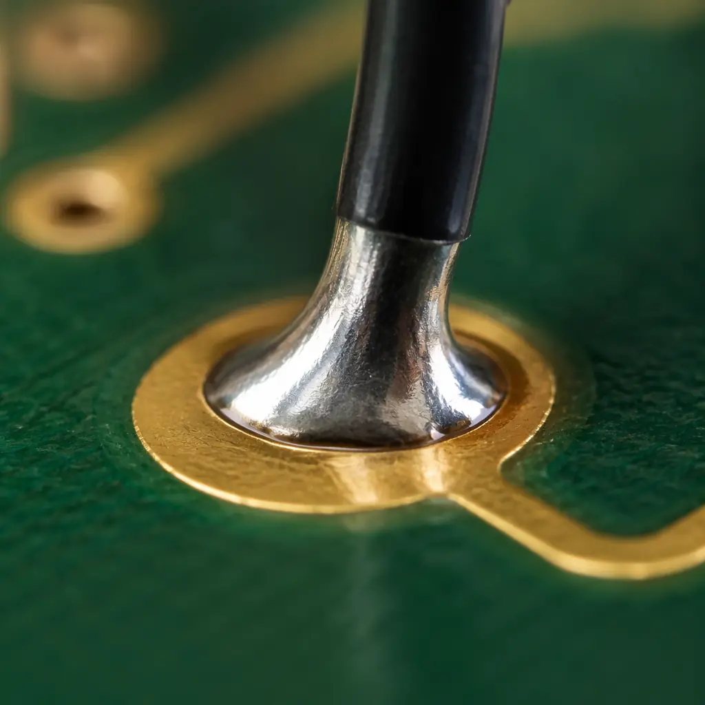

You're about to send a purchase order to a PCB manufacturer and the quality requirements section is staring at you. Should you reference IPC-A-610? J-STD-001? IPC-6012? All three? The answer matters — not just for legal clarity but because each standard governs a fundamentally different aspect of manufacturing quality.
At Huaxing PCBA, we manufacture to all three standards across 8 SMT lines and 15,000m² of factory space. But we've seen too many POs that stack all three standards without understanding what each one demands — or worse, specify the wrong standard for the wrong deliverable. Here's how to get it right.

What Each Standard Actually Governs
Think of these three standards as answering three different questions about your PCB order. They are complementary, not interchangeable.
IPC-A-610 — "Does this assembled board look acceptable?"
This is the acceptability standard for electronic assemblies. It tells your inspector what a good solder joint looks like, what level of flux residue is acceptable, and when a lifted pad is a reject. IPC-A-610 is a visual inspection standard — it's what your AOI technician references at the end of the line. It covers solder joint criteria, component placement accuracy, cleanliness, and laminate conditions — all visual, all post-assembly. Three classes exist: Class 1 (general electronic products), Class 2 (dedicated service), and Class 3 (high performance/harsh environment). For more on class differences, see our IPC Class 2 vs Class 3 guide.
J-STD-001 — "Was this assembled correctly in the first place?"
J-STD-001 is the process standard for soldered electrical and electronic assemblies. While IPC-A-610 judges the final product, J-STD-001 governs how you get there. It specifies soldering materials, process controls, operator training requirements, and process validation — from solder paste selection to reflow profile parameters to wire preparation. A board can pass IPC-A-610 inspection yet have been manufactured with J-STD-001 non-conformance. For example: using the wrong solder alloy might still produce visually acceptable joints today — but those joints will fail prematurely in the field.
IPC-6012 — "Does the bare PCB meet its performance specifications?"
IPC-6012 is the qualification and performance specification for rigid printed boards. This standard covers the PCB before components are placed — plating thickness, hole wall quality, dielectric spacing, solder mask adhesion, and dozens of other fabrication parameters. IPC-6012 is what your PCB fabricator should certify against. It's particularly important for high-reliability applications: the standard defines Class 3 requirements including 25μm minimum copper in via barrels, 0.8μm minimum ENIG gold thickness, and 100% continuity testing. IPC-6012 also specifies thermal stress testing (solder float at 288°C) and microsection analysis frequency.
Procurement Reality Check: Most OEMs reference IPC-A-610 Class 2 on their PO for the assembly, but forget to specify IPC-6012 for the bare PCB fabrication. The result? Beautifully assembled boards built on substrates that were never qualified. Specify both explicitly.
Which Standard Goes Where on Your Purchase Order
The most common mistake procurement engineers make is referencing all three standards in one blanket statement like "Manufacture to IPC Class 2." That's meaningless — Class 2 means different things in each standard. Here's exactly how to structure your quality requirements:
| Deliverable | Applicable Standard | What to Write on the PO | Class Guidance |
|---|---|---|---|
| Bare PCB Fabrication | IPC-6012 | "IPC-6012 Class [2/3], rigid printed boards" | Class 3 for auto/medical/aero; Class 2 for industrial/consumer |
| PCB Assembly (SMT + THT) | J-STD-001 | "J-STD-001 [Class 2/3], with solder" | Class 3 requires soldering to specific alloys per J-STD-001 Table 3-1 |
| Final Inspection Criteria | IPC-A-610 | "IPC-A-610 [Class 2/3] acceptance criteria" | State whether AOI alone or AOI + manual visual |
| Flex/Rigid-Flex Boards | IPC-6013 | "IPC-6013 Class [2/3]" | IPC-6012 only covers rigid; flex needs 6013 |
| Cable & Wire Harness | IPC/WHMA-A-620 | "IPC/WHMA-A-620 Class [2/3]" | Separate from PCB assembly; often missed |
Note: If your project includes box-build assembly, you should also reference your test spec (ICT, FCT, burn-in requirements) separately — these are functional, not workmanship standards.
Class 2 vs Class 3: The Practical Difference
Both IPC-A-610 and J-STD-001 use the Class 1/2/3 framework, and the jump from Class 2 to Class 3 is significant — not just in inspection criteria but in manufacturing cost. Here's what actually changes on the factory floor:
Solder Joint Criteria Tighter by 50%
IPC-A-610 Class 2 allows 25% less than minimum solder fill on PTH leads; Class 3 requires 75% minimum fill. For SMT chip components, Class 2 accepts side overhang up to 50% of termination width; Class 3 limits it to 25%. On a board with 800 components, Class 3 means roughly 3-5× more joints flagged for rework compared to Class 2 — which directly impacts cost and lead time.
Barrel Fill Requirements Double
J-STD-001 Class 2 requires 50% vertical fill of plated through-holes with solder; Class 3 requires 75%. This difference alone can require a completely different wave soldering setup — preheat temperature, conveyor speed, and flux type all need adjustment. See our PCB assembly process guide for how we optimize these parameters.
Cleanliness Requirements Go from Visual to Measured
IPC-A-610 Class 2 accepts visual inspection for cleanliness; Class 3 may require ionic contamination testing (<1.56 μg/cm² NaCl equivalent per IPC-TM-650 2.3.25). This adds a process step and requires resistivity of solvent extract (ROSE) testing equipment. For high-impedance circuits operating at low voltages — common in medical diagnostics and aerospace sensors — even slight ionic contamination can cause leakage currents that compromise signal integrity.
Cost Impact: Moving from Class 2 to Class 3 typically adds 15-30% to assembly cost. The main drivers: higher rework rates, additional inspection steps (X-ray for BGA becomes mandatory, not optional), and more documentation. For consumer electronics, Class 2 is sufficient. For automotive ADAS, medical implantables, or aerospace — Class 3 is non-negotiable.
How These Standards Interact With Your Certifications
IPC standards don't exist in isolation — your factory's ISO and IATF certifications determine whether the standards are actually being followed. Here's how they connect:
ISO 9001:2015 requires documented processes and quality records. When you specify J-STD-001 on your PO, ISO 9001 compels the manufacturer to have documented solder process controls, operator training records, and calibration logs for soldering equipment — all auditable. IATF 16949 goes further: it requires process FMEA for soldering, statistical process control (SPC) monitoring, and annual product audits. Huaxing PCBA holds both ISO 9001:2015 and IATF 16949:2016 certifications, meaning our J-STD-001 compliance isn't just claimed — it's audited quarterly by third-party registrars. See our full certifications guide for what each standard demands.
For UL-certified products, IPC-6012 becomes especially important. UL recognition (E354321 in our case) requires that PCB substrates maintain specific minimum CTI (comparative tracking index) values and flame ratings (V-0 minimum). IPC-6012's material qualification section ensures the laminate you receive actually meets these values — not just the datasheet claim. Our supplier audit checklist covers how to verify these certifications during a factory visit.
Common Procurement Errors (and How to Avoid Them)
"IPC Class 3 for Everything" — Over-Specification
We see this most often from startups and first-time hardware buyers. Specifying Class 3 when Class 2 is sufficient adds cost without adding value. The rule: if your product doesn't impact human safety (medical, automotive, aerospace), doesn't operate in extreme environments, and doesn't have a service life exceeding 5 years — Class 2 is almost certainly adequate. Your contract manufacturer should push back on over-specification; if they don't, they're happy to bill you the extra 20%.
Referencing IPC-A-610 for Bare PCB Fabrication
IPC-A-610 is an assembly standard — it doesn't cover bare board fabrication parameters. We've seen POs that say "PCB to meet IPC-A-610 Class 3" for the fabrication-only portion. The correct specification is IPC-6012 Class 3 for the bare board, and IPC-A-610 Class 3 for the finished assembly. Two different line items, two different standards.
Not Specifying Test Coupon Requirements
IPC-6012 mandates test coupons for each production panel to verify plating thickness, hole wall quality, and solder mask adhesion. If your PO doesn't explicitly require test coupons to be retained and shipped with the boards, most manufacturers will discard them after internal QC. For Class 3 projects, always require test coupons to be shipped with delivery — they're your only physical evidence of fabrication quality, especially important for high-Tg and exotic substrate materials.
Missing AOI Programming Specs
IPC-A-610 tells you what's acceptable; it doesn't tell the AOI machine what to look for. Most AOI systems have programmable thresholds for each defect type. We recommend specifying: "AOI programmed to IPC-A-610 Class [2/3] accept/reject thresholds, with 100% component inspection." Without this, you might get Class 2 thresholds on a Class 3 order — the AOI operator might not know which class you need.
When You Need All Three Standards (and When You Don't)
For a simple PCB assembly order (standard FR-4, commercial temperature range, consumer product), J-STD-001 Class 2 plus IPC-A-610 Class 2 is sufficient. Add IPC-6012 Class 2 if the bare board is being fabricated by the same supplier.
For a complex order (high-layer-count HDI, automotive or medical end-use, extended temperature range), specify all three at Class 3. The incremental documentation and testing cost is justified by the reliability requirements. At this level, we also recommend specifying microsection frequency (e.g., "one microsection per 50 panels, IPC-6012 3.6.2.2") and requiring cross-section reports with delivery.
For turnkey orders where the CM is procuring bare boards from a third-party fabricator, the PO must make it explicit: "CM shall flow down IPC-6012 Class [X] to the PCB fabricator and provide certificate of conformance." Otherwise the CM's fabricator might ship Class 2 boards to a Class 3 assembly job — and you won't know until field failures occur. Our DFM tips guide explains how to catch these issues during the design review phase.
How Huaxing PCBA Handles IPC Compliance
We don't just claim IPC compliance — we build it into our process. Every PCB assembly job at Huaxing PCBA includes:
Pre-production: Our engineers review your PO against our 100+ point DFM checklist, flagging any standard conflicts (e.g., Class 2 PO but design tolerances requiring Class 3). We'll raise it before a single panel enters production.
In-process: 100% AOI programmed to your specified IPC-A-610 class, plus X-ray inspection for BGA and QFN components. Our SMT lines run real-time SPC monitoring on paste deposition, reflow profile, and placement accuracy — data that gets included in your final inspection report.
Post-production: We ship with full documentation: certificate of conformance, test reports, and microsection data (for Class 3 jobs). Our 98.7% first-pass yield across all product classes means fewer rework cycles and faster delivery — whether you need 24-hour quick-turn prototypes or 80,000m²/month production volumes.
Ready to specify your quality requirements? Contact our engineering team for a pre-production review — we'll help you select the right standards for your application before you commit to production.